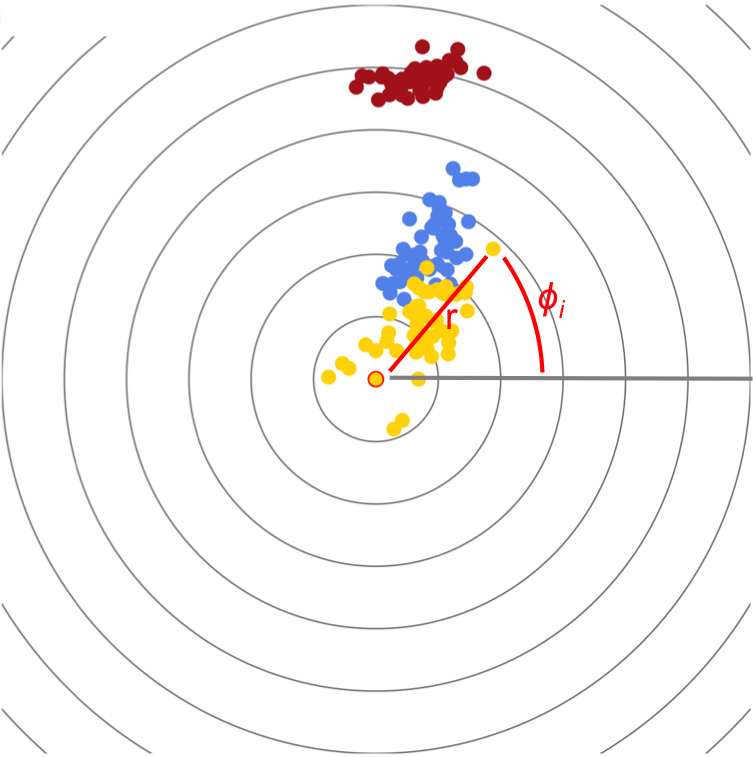

Focused multidimensional scaling (focusedMDS) is a tool for visualizing the multidimensional data
contained within a pairwise distance matrix. Many useful methods exist for visualizing structures in
this kind of high-dimensional data, e.g. traditional multidimensional scaling,
principal components analysis, and t-distributed stochastic neighbor embedding (t-SNE).
But because of the nature of high-dimensional data, reproducing the actual relationship
between all points in two dimensions is impossible.
With focusedMDS, we instead represent the relationship of all points to one point (the focal point) exactly, while showing the relationships of the non-focal points to one another only approximately. Interacting with the graph then allows for fast, intuitive exploration of the data by changing the focal point.
focusedMDS was created by Lea Urpa and
Simon Anders .
Double click any data point on the graph to change the focal point.
This plot of the classic Iris dataset shows clearly clusters of the three Iris species. Using measures on sepal length, sepal width, petal length, and petal width, we calculated Euclidean distances for plotting with focusedMDS. For sample code to make this graph, see the tutorial section on this page.
Our method plots all the points in their exact distances from the focal point by plotting in a polar coordinate system, with fixed r as the exact distance to the focal point. Points are plotted iteratively, starting from the point closest to the focal point outward. Each φ is chosen by minimizing the squared difference between the actual distances dij between each new point and the points already plotted, given from the distance matrix, and the distances on the 2D plane, Dij.
This stress function is minimized iteratively for each new point, using a custom univariate optimization function written in Javascript based on Brent's algorithm.
 The package is available on
CRAN,
using the command install.packages("focusedMDS"). The most recent unreleased
version is available at
https://github.com/anders-biostat/focusedMDS.
library(datasets)
library(focusedMDS)
# Load Edgar Anderson's Iris Data
data("iris")
# Create a table of measures to compare individuals on
table <- iris[ , c("Petal.Length", "Petal.Width", "Sepal.Length", "Sepal.Width")]
# Find euclidean distances between flowers based on these measures
dists <- dist(table)
#Simplest usage: only with dataset input
focusedMDS(dists)
In the simplest case, we specify only the distance object. Colors are chosen from a sequential rainbow and labels are automatically assigned.
Note we chose to create the distance matrix using petal length, petal width, sepal length, and sepal width measures and calculated simple euclidean distances between each individual flower.
The interesting biological questions come from what individuals you choose to compare, and which measures you include when calculating the distance matrix- the focusedMDS function only requires that the input be either a dist object or a square, positive, symmetric matrix.
Next we will create a vector of labels for the points:
# Create text labels
names <- c( paste( rep("setosa", 50), 1:50, sep = "" ),
paste( rep("versicolor", 50), 1:50, sep = ""),
paste( rep("virginica", 50), 1:50, sep = "")) # Important not to have spaces in name labels
focusedMDS( dists, ids = names)
Given a vector of characters indicating color categories, colors are automatically assigned. Note the vector must be the same length and in the same order as the column/row names in the distance matrix.
Finally, we will create a vector of color labels based on flower species:
# Create labels based on flower species
colorvector <- as.character(iris$Species) # making sure to convert factors to characters
# Visualization with color labels
focusedMDS(dists, ids = ids, colors = colorvector)
Again, the ids vector must be in the same order as column/row names to label the points correctly. The function also has additional specifications for starting focus point (by convention the first id), fixed size of the plot (in pixels), number of background circles, and tolerance for the optimization function.